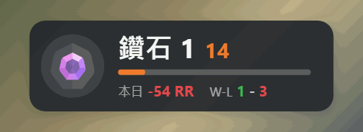
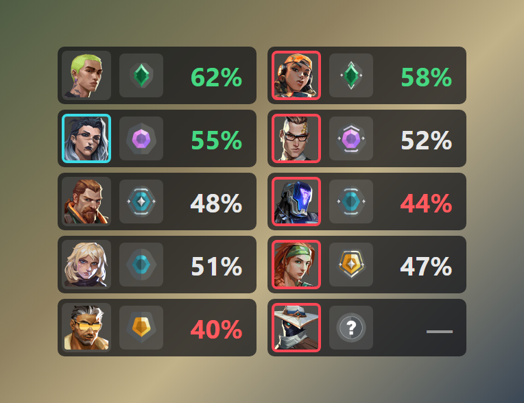
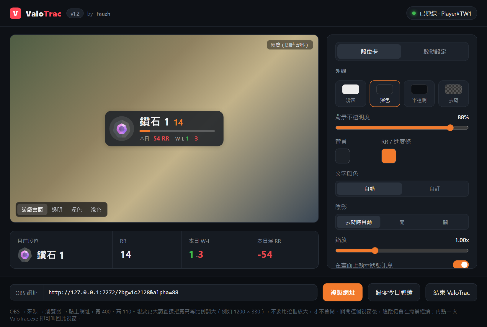
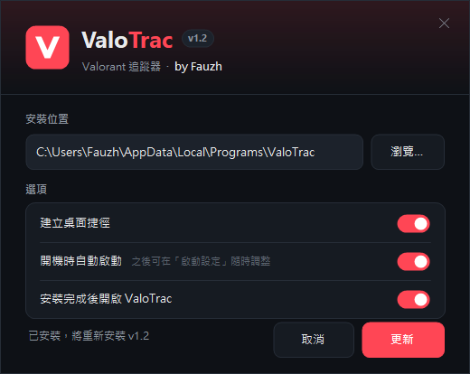

給想隨時掌握自己排位進度的實況主與一般玩家。
即時顯示你的段位、RR、本日勝敗與淨 RR。可以放進 OBS，也可以直接顯示在螢幕上。
上分、掉分、升段、降段都有專屬動畫，比賽結束約 30 秒內自動更新。
段位卡可以一直顯示，或只在按住 Tab 時出現；滑鼠會直接穿透，不影響操作。
選用功能：選角與對戰中看到雙方每個人的英雄、段位、本季勝率或 RR，不顯示任何玩家名字。
ValoTrac 不會要求、也不會儲存你的 Riot 帳號密碼。
一鍵安裝，不需要系統管理員權限；可設定開機自動啟動，隨時從 Windows 設定解除安裝。
外觀可以自己調：淺色、深色、半透明、去背，顏色和大小都能改。
打完一場約 30 秒內自動更新。上分時綠光、RR 數字往上跳；掉分時紅光加抖動，還會飄出 +18 / −16。
可以放進 OBS 直播，也可以直接顯示在螢幕上，設定成按住 Tab 才出現。

進度條衝到滿、段位圖示翻面換成新段位，再跳出「升段！」橫幅。降段也有專屬動畫（雖然不希望你看到）。

左邊隊友、右邊敵人，顯示英雄、段位，以及本季勝率（綠色 ≥ 55%、紅色 < 45%）。也可以切換成顯示每個人的 RR。
只顯示英雄與段位，不顯示任何玩家名字；滑鼠會直接穿透，不影響操作。

左邊即時預覽，右邊調外觀；下方顯示你目前的段位、RR 與本日戰績。

不需要系統管理員權限。可以勾選桌面捷徑、開機自動啟動；之後出新版，直接執行新的安裝檔就能更新。
大約一分鐘。
按上面的「下載 Windows 版」。瀏覽器如果說「不常下載」，選保留。
如果跳出藍色的「Windows 已保護您的電腦」，點其他資訊→仍要執行。這是因為程式還沒有付費的數位簽章。
不需要系統管理員權限。可以勾選建立桌面捷徑、開機自動啟動。
登入 VALORANT 後段位卡就會出現。要顯示在遊戲畫面上，請把 VALORANT 的顯示模式設成「視窗化全螢幕」。要用 OBS 的話，按「複製網址」貼到瀏覽器來源即可。